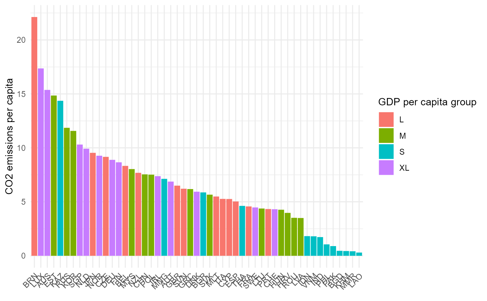

Plot bar charts of single indicators. Bar charts can be coloured by an optional grouping variable by_group, or if
iCode points to an aggregate, setting stack_children = TRUE will plot iCode coloured by its underlying scores.
plot_bar(
coin,
dset,
iCode,
...,
uLabel = "uCode",
axes_label = "iCode",
by_group = NULL,
dset_label = FALSE,
log_scale = FALSE,
stack_children = FALSE,
bar_colours = NULL
)A coin object.
Data set from which to extract the variable to plot. Passed to get_data().
Code of variable or indicator to plot. Passed to get_data().
Further arguments to pass to get_data(), e.g. for filtering units.
How to label units: either "uCode", or "uName".
How to label the y axis and group legend: either "iCode" or "iName".
Optional group variable to use to colour bars. Cannot be used if stack_children = TRUE.
Logical: whether to include the data set in the y axis label.
Logical: if TRUE uses a log scale for the y axis.
Logical: if TRUE and iCode refers to an aggregate, will plot iCode with each bar split into
its underlying component values (the underlying indicators/aggregates used to create iCode). To use this, you must
have aggregated your data and dset must point to a data set where the underlying (child) scores of iCode are available.
Optional vector of colour codes for colouring bars.
A ggplot2 plot object.
This function uses ggplot2 to generate plots, so the plot can be further manipulated using ggplot2 commands.
See vignette("visualisation) for more details on plotting.
# build example coin
coin <- build_example_coin(up_to = "new_coin", quietly = TRUE)
# bar plot of CO2 by GDP per capita group
plot_bar(coin, dset = "Raw", iCode = "CO2",
by_group = "GDPpc_group", axes_label = "iName")
